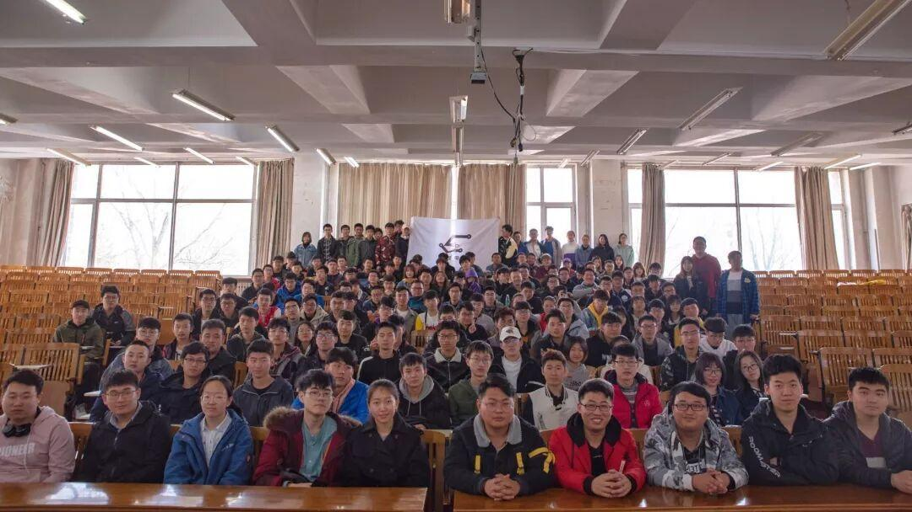

2019电协换届选举大会成功举办！
2019 电子技术与应用协会换届选举大会成功举行

热烈庆祝 2019 年电协换届选举大会成功举行！
今天电协将带着新鲜血液继续前行！
接下来让我们看看本届的竞选人


经过一周的等待，竞选结果终于出来了！
以上竞选者皆成功竞选！
（各社团负责人及团支委名单亲详情如下）
沈阳理工大学2018-2019年下学期社团负责人及团支委名单
从明天起，电协的年轻一代将肩负责任，他们在日后的工作中定会饱含热情。一代代电协人的目标从未改变，哪怕前路坎坷，我们也定会接过的旗帜继续前行。

图片：信息部
编辑：王颢然